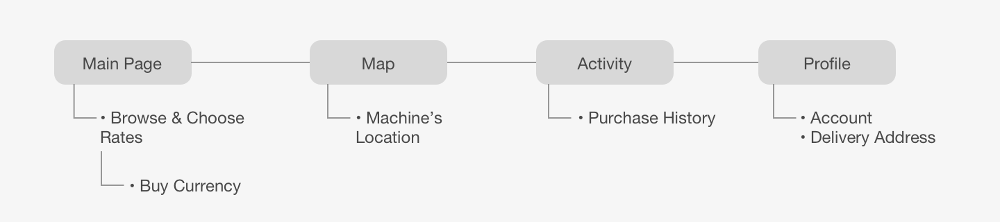
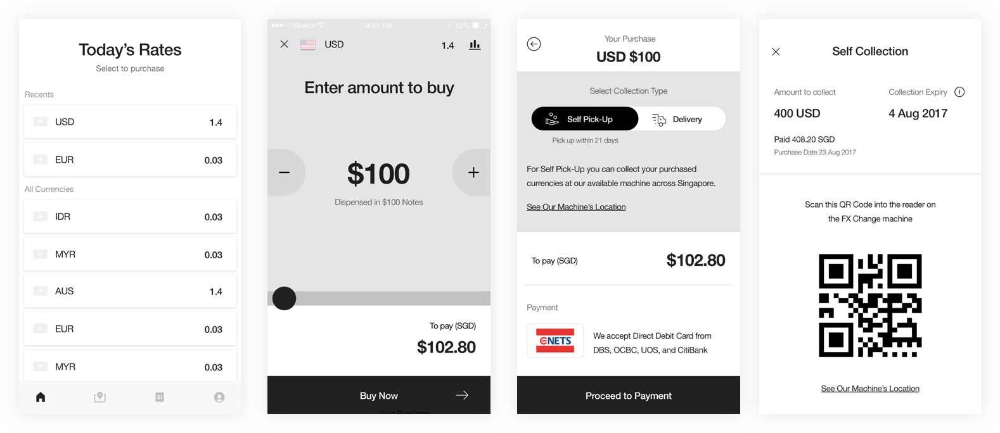
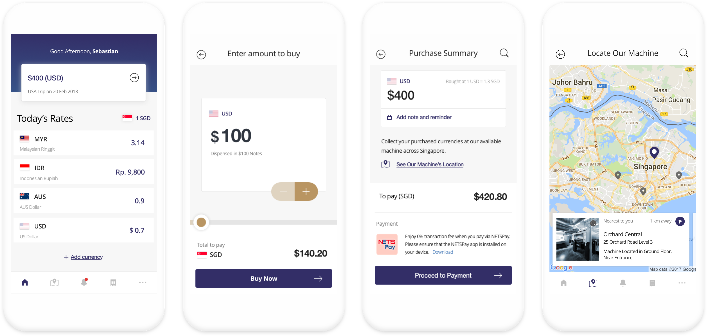

Currency Exchange Transaction App 🤑
How might we enable consumer to get the best rates in the most convineient way.
Background
FX Change is a start-up that running a currency withdrawal machine service. Their initial target are mainly tourists who are travelling in Singapore. In this project they are looking to leverage their audience to those who stay in Singapore and wants to travel out, we are engaged to enhance their business by building a mobile app that helps bring the locals to withdraw foreign currency from FXChange as a solution. Worked directly with stakeholders, the team consisted of myself, lead designer, a project manager, and developers.
My role
User Research, Prototype, UI Design, Motion Design.
The approach
What to discover
Method
User research findings:
(Focus group) The participants are locals who live in Singapore, working adults and university students, 22-36 years old, travel at least 3 times a year.
Persona

Site map
Prototype & validate
We quicky prototype a wireframe and validate our idea for the main functions. First, we introduced users about our machine and how it works. Second, informed about the feature to lock your currency rates and collect anytime.
Purchasing
We learned that users quickly scan through the flag to find their currency. The viewing rate always confuse users and the preferences are vary (between we buy/we sell), but we realised what matters to them is the converted rate of the amount they’re buying. As it resolved their confusion when they arrive to the buying page. Locations are a big concern for users too, they wanted to know if the location are convenient for them to collect before making a purchase.
Collection
Comments on this that users don’t have a clear view that they had purchase something in the main page. Also, users concern about when QR code doesn’t work and we found that some users can’t locate the machine inside a building. So we decide to provide a collection code to be the alternative and give more detailed location of the machine by guiding pictures.
Iterate & build
From the feedbacks and data collected. We iterate the wireframe and come up with final design and pass the assets to the devs. For art direction, we have to explore on how they want to position themselves as there’s no branding except for the logo. We proposed for a trust and frugal tone of voice, which made use of their dark blue and gold color to show the essence of our product.
